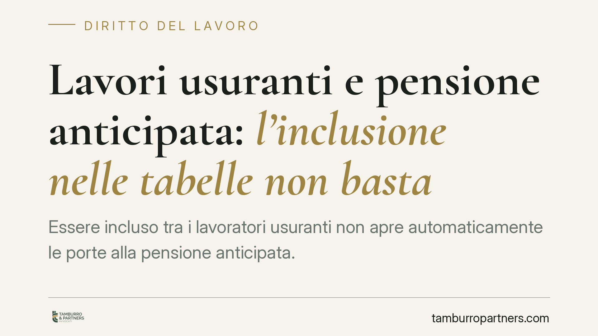

Lavori usuranti e pensione anticipata: l'inclusione nelle tabelle non basta
Essere incluso tra i lavoratori usuranti non apre automaticamente le porte alla pensione anticipata. La disciplina previdenziale di favore riposa su un elenco specifico di mansioni particolarmente usuranti, distinto dalla più ampia categoria dei lavori usuranti. Una distinzione tecnica che pesa concretamente su chi presenta domanda all'INPS confidando nella propria classificazione contrattuale.

Il caso
Un lavoratore addetto alla conduzione di gru chiede l'accesso alla pensione anticipata prevista per chi svolge attività particolarmente usuranti. Il ragionamento è lineare: la sua mansione figura tra le lavorazioni usuranti, quindi il beneficio dovrebbe spettare.
La questione, però, non è così scontata. L'inclusione di una mansione in una generica categoria di lavori usuranti non coincide automaticamente con l'accesso al trattamento pensionistico anticipato, che è governato da presupposti propri e più stringenti.
Inquadramento normativo
Occorre tenere distinti due piani che spesso vengono confusi.
Da un lato esiste la nozione, più ampia, di lavoro usurante elaborata in sede previdenziale e contrattuale, che individua una platea estesa di attività gravose.
Dall'altro, l'accesso alla pensione anticipata per attività usuranti è regolato dal D.lgs. 21 aprile 2011, n. 67. Questo decreto non rinvia genericamente a qualunque lavoro considerato usurante: individua in modo puntuale le mansioni particolarmente usuranti che danno diritto al beneficio, richiamando le lavorazioni già individuate in sede normativa e nei relativi allegati tecnici (tra cui le voci del D.M. 19 maggio 1999).
Il punto è proprio questo: il beneficio della pensione anticipata ha natura derogatoria rispetto ai requisiti ordinari. In quanto deroga, va interpretato in senso restrittivo. Non si può estendere il trattamento di favore a mansioni che, pur faticose o pur rientranti in una più ampia nozione di usura, non siano espressamente comprese nell'elenco delle attività particolarmente usuranti.
È un principio consolidato in materia previdenziale: le norme che introducono anticipi o agevolazioni rispetto al regime generale non tollerano applicazioni analogiche. L'appartenenza a un elenco non equivale all'appartenenza all'altro.
Implicazioni pratiche
Per il lavoratore il messaggio è concreto: la classificazione della propria attività come usurante, in un contesto, non garantisce il diritto alla pensione anticipata in un contesto diverso.
Chi intende accedere al beneficio deve verificare se la specifica mansione concretamente svolta rientri nell'elenco delle attività particolarmente usuranti rilevante ai fini del D.lgs. 67/2011, e non limitarsi a constatare che il proprio profilo sia, in generale, considerato gravoso.
La differenza non è formale. Si traduce nel rigetto della domanda da parte dell'INPS e, spesso, in un contenzioso dall'esito tutt'altro che certo, proprio perché il giudice è chiamato ad applicare l'elenco in modo rigoroso.
Contano inoltre i requisiti ulteriori previsti dalla disciplina: lo svolgimento dell'attività usurante per un periodo minimo e con una determinata frequenza. Questi parametri vanno accertati in concreto, sulla base della documentazione del rapporto di lavoro, prima di radicare qualunque pretesa.
Cosa fare in concreto
- Verifica l'elenco pertinente. Controlla se la mansione effettivamente svolta rientra tra le attività particolarmente usuranti rilevanti per la pensione anticipata ex D.lgs. 67/2011, e non solo in una più generica categoria di lavori usuranti.
- Raccogli la documentazione del rapporto. Contratti, mansionari, buste paga e certificazioni del datore di lavoro servono a dimostrare la natura concreta dell'attività e la sua continuità nel tempo.
- Accerta i requisiti temporali. Verifica la durata complessiva dell'attività usurante e la sua frequenza rispetto ai parametri minimi richiesti, documentandoli con precisione.
- Valuta la posizione prima di presentare domanda. È opportuno esaminare con attenzione la sussistenza dei presupposti, per evitare un rigetto e un contenzioso privo di solide basi.
- Conserva ogni riscontro dell'INPS. In caso di diniego, la motivazione dell'ente è il punto di partenza per capire se vi sia margine per una contestazione.
Conclusione
La vicenda conferma un principio chiaro: il trattamento pensionistico anticipato per attività usuranti è un beneficio speciale, ancorato a un elenco tassativo di mansioni e a requisiti precisi. L'appartenenza a una più ampia nozione di lavoro usurante non è sufficiente. Prima di confidare nel diritto al beneficio, è essenziale una verifica puntuale della propria posizione.
---
*Contributo informativo a cura di Tamburro & Partners - Avv. Giuseppe Tamburro. Non costituisce parere legale.*
Ogni storia di lavoro ha i suoi tempi.
Se gestisci HR e vuoi un confronto su contenzioso, ispezioni o licenziamenti, scrivi allo studio. Ti rispondiamo entro un giorno lavorativo.